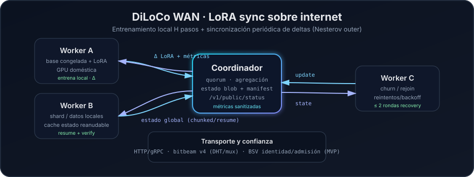

Entrena LLMs con LoRA
sobre internet, sin datacenter.
DiLoCo WAN sincroniza solo adaptadores LoRA cada H pasos (outer Nesterov),
con descarga de estado reanudable/verificada, tolerancia a churn y transporte
bitbeam (DHT) con identidad/admisión BSV (MVP).
En WAN pesan el ancho de banda, la inestabilidad y la memoria.
Coste de sincronización
Replicar pesos completos es inviable en internet. DiLoCo sincroniza periódicamente solo deltas de adaptadores LoRA, con compresión y métricas de sync/bytes.
Churn y cortes
Nodos domésticos se desconectan o llegan tarde. El sistema usa quorum, heartbeats, reintentos/backoff, re-registro y descarga de estado reanudable/verificada.
VRAM limitada
QLoRA congela la base y entrena adaptadores ligeros, permitiendo iterar en hardware modesto y escalar la receta hacia modelos mayores por isla.
Coordinación por rondas, estado verificable y transporte resiliente.

Una ronda, paso a paso
RoundStart: versión global, hashes/base/config y metadatos de estado.- Cada worker entrena
Hpasos locales y calcula el delta del adaptador LoRA. - Envía el delta (comprimido/validado); el coordinador espera quorum/deadlines.
- Agregación y paso exterior Nesterov → nuevo estado global.
- Publicación de estado blob (chunked/resumable/verificado) y checkpoint según política.
Robustez y confianza (actual)
- Estado: Range/ETag, manifest por chunks, Merkle/hash, cache persistente por contenido.
- Churn: reintentos, re-registro, recuperación ante cortes/reinicios (objetivo ≤ 2 rondas).
- Compresión: int8, top-k + error feedback (negociación zstd en progreso).
- Identidad: BSV/admisión/invites/firmas (MVP), túnel bitbeam v4 con evolución a pares dinámicos.
- Privacidad: página pública sanitizada; control/dashboard privados y autenticados.
Base sólida + P1 visual/UX y P2 WAN en progreso.
Implementado / operativo
- Coordinador/worker HTTP (+gRPC opcional), quorum, deadlines, heartbeats, late join/rejoin.
- Backend toy/HF (PEFT/QLoRA), base congelada, serialización de adaptadores, checkpoints atómicos.
- Compresión int8 y top-k + error feedback.
- Estado blob con Range/chunks/manifest/hash/Merkle, resume, verificación y cache (memoria + persistente).
- Métricas de ronda/sync/bytes expuestas y visibles en web pública, dashboard y network.
- Identidad/admisión BSV MVP, invites, túnel bitbeam v4, mejoras de reconexión/reconciliación de peers.
- Estado público sanitizado en
/v1/public/status(y/api/statusen deploy) y dashboard/agente protegidos.
En progreso / pendiente
- Paridad gRPC chunked/manifest para artefactos grandes y checkpoints.
- Compresión negociada/efectiva en wire (zstd) y métricas bytes-on-wire completas.
- Validación E2E WAN/NAT multi-máquina, `tc netem`, stragglers y suite de resiliencia.
- Protocolo firmado end-to-end, rotación/revocación de claves, hardening authz/auditoría.
- Benchmarks reproducibles 32B/70B, observabilidad avanzada y UX one-command completa.
Validaciones funcionales y mediciones de sincronización.
Resultados (referencia F1 previa)
Qwen2.5-0.5B, 2 workers, 5 rondas (holdout Zig). loss gap = (DiLoCo − baseline) / baseline (negativo = mejor).
| Config | H=10 | H=50 | H=100 |
|---|---|---|---|
| int8 | +5.29% | -0.97% | -1.47% |
| int8 + top-k 10% | +7.72% | +4.45% | +3.14% |
| int8 + EF | +7.44% | +3.62% | — |
Payload 0.5B: 2.16 MB → 0.54 MB (4×) con int8. Toy: DiLoCo mejora loss frente a baseline en smoke determinista.
Qué se valida hoy
- Suite automatizada: 44 tests OK (smoke, reanudación, churn/rejoin, cache/resume de estado, métricas, transporte).
- Estado público con métricas agregadas y tendencias sanitizadas.
- Dashboard/launcher con conexión coordinador/agente, procesos, logs y export de datos.
- Recetas HF/QLoRA probadas en modelos pequeños/medianos; escalado 32B/70B en roadmap con perfiles reproducibles.
Público y privado, separados por diseño.
Público (solo lectura)
- Sirve
web/public/y proxyea/api/status→/v1/public/status(sanitizado). - Sin IDs de nodos, claves, logs ni endpoints de control.
- Resiliente: la página puede mostrar estado "sin datos" si el coordinador no está disponible.
Privado (control)
- Dashboard/agente (
web/dashboard.*,scripts/agent.py) y coordinador deben ir autenticados y no expuestos públicamente. - Agente con
AGENT_TOKEN(HTTP Basic/password o header/token según cliente); añade capas nginx/VPN/allowlist. - Deploy automatizado:
deploy/deploy_vps.sh, compose enproxy-net, vhosts endeploy/nginx/.
Guía: docs/DEPLOY_PUBLIC_DASHBOARD.md (ver repositorio) · estado público: didiloco.bsv.direct
Prueba local, luego despliega público/privado.
# Tests
.venv/bin/python -m unittest discover -s tests -q
# Smoke 2 workers (toy, CPU)
.venv/bin/python scripts/smoke_local.py --reset --rounds 4 --workers 2 --device cpu
# Coordinador + worker (modo multi-proceso)
./coordinator --config configs/smoke.json --device cpu --reset --max-rounds 4 --no-wait
./worker --config configs/smoke.json --node-id node-0 --shard-id 0 --coordinator http://127.0.0.1:8095 --device cpu
# Console/agente local
./agent --open
# Deploy VPS (ejemplo, sin instalar/reload nginx desde script)
NGINX_CONF_FILES="" NGINX_CONTAINER="" ./deploy/deploy_vps.sh